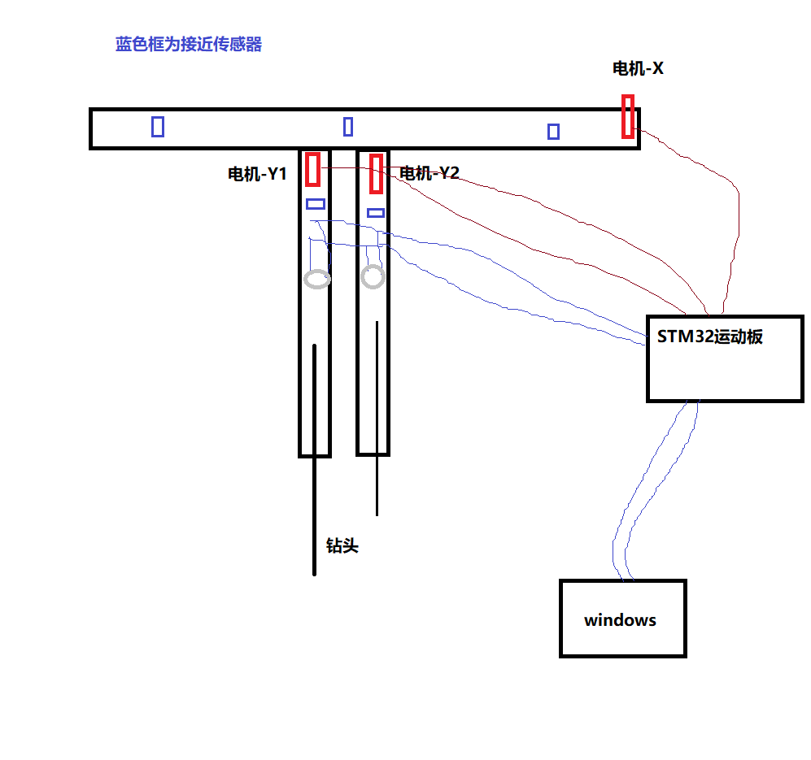

QT,C++写的一套上位机控制程序，通过modebus协议控制STM32下位机，进而控制电机运动
SPDS是一套植物土壤监测使用的一套软件。包含上位机，下位机。
初始创作于2022.12，于深圳，作者825772667@qq.com
SPDS全名为 Soil Parameter Detect System
SPDS上位机部分由QT写，运行在windows和linux（ubuntu）上，同时支持树莓派。
SPDS下位机部分，主要是运动控制系统，是STM32 F407 ZGT6 开发板构成，同时，还有压力传感器板，氮水传感器板。
SPDS下位机最开始是用硬石STM32 F407 IGT6 的电机控制板开发，后来，硬件部分自己画板，但功能都大同小异。
原理和过程：
上位机运行在windows电脑，通过串口转485工具接到485总线上，电机控制板及其它的板都接到485总线。这个485总线由2条线双绞组成。施工环境中，该总线长度为10米，对于485支持的公里级来说，这个长度完全没有问题。
传输协议为"modbus",加引号是因为这个modbus实际上自己改了很多，并非标准modbus协议。
存在的问题：
485通信不太稳定，尤其是板子答复PC的信息在PC端经常不对，比如06变成了48，还有就是一条信息收到后变成了2条。但是好在发给板子的指令还算好。
485的响应周期是个问题。目前压力测试发现极限是50ms，包括从电脑发指令下去，到电脑收到指令。30ms就发生很多问题。因此很多处理都是为了节省带宽。本来想用CAN，但不幸因投入问题终止了。
PC端：
按键下压发送指令，弹起发送停止指令。
有一个队列，用来处理指令，当发送频率大于设定的最高频率时，都要排队，然后慢慢发。然而，有些指令是不能等的，比如停止。所以把停止的优先级调到最高，可以插队。
还有就是压力数据要和电机位置数据对应，这部分也做了一些处理。
需求是电机下压钻土时，在没有到地面的部分数据不需要。这就涉及到地面判断的问题，有压力则是地面，这一部分也做了处理
STM32运动板端：
用的是cubeMX+HAL库开发，参考了硬石F407的大量例子。看代码用source indight, 编译用MDK5，烧写器为正点原子的ST-link 还有硬石的 DAP，USB--485为？， 电机76步进电机，电机驱动为雷赛。
横向电机让钻头机构横向运动；2个纵向电机控制纵向运动。还有2个直流电机不说。
板子部分启动后要归零，通过接近传感器（欧姆龙）限制运动范围，当铁片到传感器位置时，就知道了位置。
方向定义：
站在传感器（车头）前面，面朝传感器，左手为左，右手为右。
坐标定义:
最左传感器处为X=0; 横向电机到最上传感器处为Y=0
归零是先往左撞，到最左再往右，到中间停止。
打钻取样是：
先两个Y电机归零
再移动到X坐标处，再移动到Y处取样，然后推杆出，缩回，然后归零。这个逻辑是全部手撸的，没有使用RTOS
电机控制用脉冲比较输出，通过调频率控制速度，通过脉冲个数控制移动距离。
电机的位置，速度有一个较为复杂的换算，但主要思路是：电机正常每秒位移X毫米，通过结构的规定，换算成每秒多少圈，通过驱动器细分数，以及实际的芯片频率，再次换算每秒多少个脉冲，芯片频率又设计到分频。我在里面写了常数，以便自带加密。
另外就是电机堵转处理，急停按键处理等等。
modbus这块主要是参考硬石的代码，虽然多，但是也没什么好说的。
202212 我已经把上位机QT写的SPDS，下位机STM32写的 代码，以及历史版本， 流程图，modbus通信协议归档了。
# 开发环境
Desktop_Qt_5_9_9_MinGW_32bit-Debug
推荐开发环境：
QT 5.9以上；
windows10
推荐运行环境：
windows10
说明：
本软件仅供娱乐，学习使用。切不可用于商业目的。保护知识产权，人人有责。
作者：825772667@qq.com
本软件仅供娱乐，学习使用。切不可用于商业目的。保护知识产权，人人有责。
作者：825772667@qq.com
=====================================
=====================================
=====================================
版本修改记录：
V1.0：完成初始功能；
=====================================
关键词：
QT，C++，上位机
硬石STM32 F407 IGT6 下位机
485总线
modbus
cubeMX+HAL库
使用效果：
